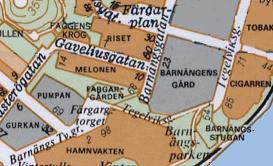
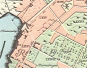

Södermalm i tid och rum
Ur Stockholms gatunamn

1996
1733
Barnängsgatan 1885
Danviks hospital blev år 1581 ägare till ett område på sydöstra delen av Södermalm, mellan Vita Bergen och Hammarby sjö. Man planerade att här anlägga ett »barnhospital». Då det i de följande årens räkenskaper talas om »det nya hospitalet» och om »barnestugan vid Hammarby sjön», tyder detta på att planerna i någon mån förverkligats. År 1602 omtalas området såsom »Barnestuguängen». Detta namn ombildas senare till Barnängen; så nämns t.ex. »Barnängen på Södermallm» år 1669.
Under slutet av 1600-talet anlade Jacob Gavelius en klädesfabrik inom området (se Gaveliusgatan) och på 1860-talet startade Barnängens kemiska fabrik i den Tottieska malmgården vid Bondegatan. Under 1760-talet byggdes Barnängens herrgård, ritad av Elias Kessler.
Barnängen gav upphov till gatunamnen Barnängsgatan och Barnängs tvärgränd, vilka återfinnes på Tilleus' karta 1733. Vid namnrevisionen 1885 fick dåvarande Barnängsgatan namnet Barnängstvärgatan, som i sin tur år 1926 blev utbytt mot Gaveliusgatan. År 1885 flyttades namnet Barnängsgatan till »den närmast öster om Dufnäsgatan med denna jämnlöpande gata mellan Ringvägen och Hammarby Strand».
Duvnäsgatan 1885
Vid namnrevisionen 1885 gav man namnet Duvnäsgatan - kategorien »kända ställen utanför de delar af staden, der gatorna ligga» - åt dåvarande Tullgårdsgränden »och den i dess brutna förlängning lagda gatan till Tegelvikstorget». Tullgårdsgränden (Tullgårdsgränd 1834) motsvarade nuvarande Ljusterögatan (se denna).
1885 års Duvnäsgata var planerad såsom en sammanhängande gatusträckning ungefär motsvarande nuvarande Ljusterögatan-Tengdahlsgatan-Duvnäsgatan. Den blev dock aldrig utbyggd. År 1926 fick den södra delen av gatan namnet Ljusterögatan.
Färgargårdstorget 1979 - Färgarplan 1968
Namnen anknyter till den färgeriverksamhet som sedan 1600-talet förekommit kring Hammarby sjö. Den första kända färgaren inom Barnängsområdet var Hans Wessman, som började sin verksamhet på 1680-talet och dog 1713. En annan känd färgare var Carl Gustaf Hoving, som 1770 lät uppföra den vackra malmgård som ännu står på Liljeholmens stearinfabriks tidigare område. En bostadslänga från omkring år 1740 som ingått i den numer försvunna Färgargården står kvar intill Barnängsgatan.
Gaveliusgatan 1925
Namnberedningen föreslog 1922, att dåvarande Barnängstvärgatan, som ledde fram till Barnängsfabrikens huvudingång, skulle få namnet Gaveliusgatan efter Jacob Larsson Gavelius, adlad Lagerstedt (1655-98), »den kände klädesfabrikören, som härstädes i slutet av 1600-talet anlade den fabrik, som bl. a. försåg svenska krigsmakten med ett utmärkt kläde». Namnet Barnängstvärgatan hade gatan fått vid namnrevisionen 1885; intill dess hette den Barnängsgatan (Tileus' karta 1733). Se vidare Barnängsgatan.
Tullgårdsvägen 1979
Namn efter Vintertullen. Tullgården låg intill nuvarande Malmgårdsvägen-Ljusterögatan och tillkom under 1600-talets senare del. Ett tidigare namn på Ljusterögatan (se denna) var Tullgårdsgränd och Malmgårdsvägens tidigare namn var Vintertullsgatan (se Malmgårdsvägen).